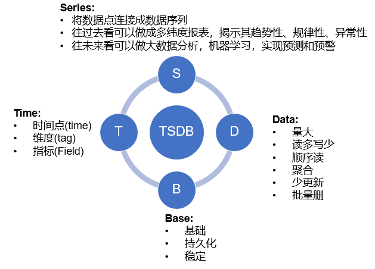
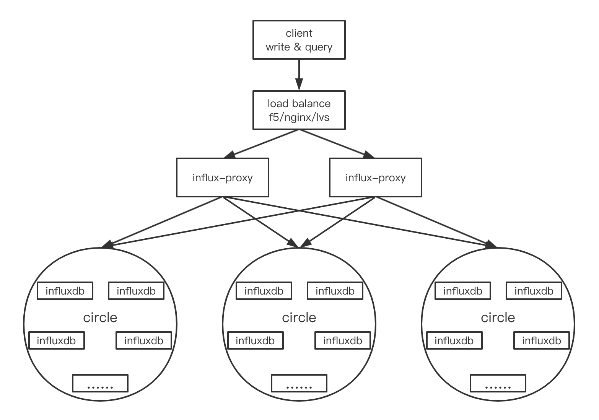

0.时序数据库介绍
时序数据库特点
metric: 度量，相当于关系型数据库中的table。
data point: 数据点，相当于关系型数据库中的row。
timestamp：时间戳，代表数据点产生的时间。
field: 度量下的不同字段。比如位置这个度量具有经度和纬度两个field。一般情况下存放的是会随着时间戳的变化而变化的数据。
tag: 标签，或者附加信息。一般存放的是并不随着时间戳变化的属性信息。timestamp加上所有的tags可以认为是table的primary key。

influx-db基本概念
基本概念
| mysql | influxdb | 说明 |
|---|---|---|
| database | database | 数据库 |
| table | measurement | 类似mysql中表的概念 |
| record | tag + field + timestamp | 传统表中的一行数据，映射到influxdb中，可以划分为三个 |
1. database
数据库，和mysql的数据库相比，没有太大的歧义
2. measurement
对比的是mysql中的table，从实际体验来看，两个之间最明显的区别在于没有单独的创建measurement的方法，直接新增一条数据时，若measurement不存在，则直接创建并插入一条数据
3. Point
这个对比的是mysql中的record，在influxDB中，表示每个表中，某个时刻，满足某个条件的filed数据（简单来说就是 timestamp + tag + filed)的组成一个point
- timestamp : 时间戳，ns单位，每个记录都必然有这个属性，没有显示添加时，默认给一个
- tag: 标签，kv结构，在database中， tag + measurement 一起构建索引
- 参与索引创建，因此适合作为查询的过滤条件
- tag的数据量不要太多，最好能有典型的辨别性（和mysql的建立索引的原则差不多）
- value为String类型
- tag是可选的，在measurement不设置tag也是ok的
- field：存储数据，kv结构
- 数据类型为: long, String, boolean, float
4. Series
Series: tag key 与tag value的唯一组合
1.influx-db安装部署
1 | wget https://dl.influxdata.com/influxdb/releases/influxdb-1.7.10.x86_64.rpm |
2.influx-db常用命令以及配置
基本操作命令
基础命令
1 | # 创建数据库 |
进阶命令
1 | SHOW MEASUREMENTS --查询当前数据库中含有的表 |
常用函数
聚合函数：FILL(), INTEGRAL()，SPREAD()， STDDEV()，MEAN(), MEDIAN(), DISTINCT(), COUNT(), SUM()等。
选择函数: SAMPLE(), PERCENTILE(), FIRST(), LAST(), TOP(), BOTTOM(),MAX(),MIN()等。
转换函数: DERIVATIVE(),DIFFERENCE(),ELAPSED(),MOVING_AVERAGE(),NON_NEGATIVE_DERIVATIVE(),STDDEV()等.
预测函数：HOLT_WINTERS()。
连续查询
连续查询(CONTINUOUS QUERY，简写为CQ)是指定时自动在实时数据上进行的InfluxQL查询，查询结果可以存储到指定的measurement中。
基本连续查询
1 | CREATE CONTINUOUS QUERY <cq_name> ON <database_name> |
高级连续查询
1 | CREATE CONTINUOUS QUERY <cq_name> ON <database_name> |
与基本语法不同的是，多了RESAMPLE关键字。高级语法里CQ的执行时间和查询时间范围则与RESAMPLE里面的两个interval有关系。
高级语法中CQ以EVERY interval的时间间隔执行，执行时查询的时间范围则是FOR interval来确定。如果FOR interval为2h，当前时间为17:00，则查询的时间范围为15:00-16:59.999999。RESAMPLE的EVERY和FOR两个关键字可以只有一个。
配置文件
1 | 生成默认配置文件 |
1 | #全局配置 |
3.influx-db 客户端以及接口
1 | <dependency> |
1 |
|
4.influx-db开源集群方案

4.1 架构示例
- client：influxdb-java、influxdb-shell (influx)、curl、浏览器等客户端
- load balance：负载均衡，如 F5、Nginx、LVS、HAProxy 等
- influx-proxy：influx-proxy 实例，架构示意图部署了两个 influx-proxy 实例
- circle：一致性哈希环(circle)，一个 circle 包含了若干个 influxdb 实例，共同存储了一份全量的数据，即每个 circle 都是全量数据的一个副本，各个 circle 数据互备。不同 circle 不能包含相同 influxdb 实例，每个 circle 包含的 influxdb 实例个数可以不相等。circle 只是一种逻辑划分，无实体存在，架构示意图配置了三个 circle
- influxdb：influxdb 实例，以 url 进行区分，可以部署在同一服务器上以不同端口运行多个实例，一个 influxdb 实例只存储了一份全量数据的一部分数据
4.2 原理
4.2.1设计原理
4.2.1.1一致性哈希原理
原理文章：一致性Hash(Consistent Hashing)原理剖析
- 一致性哈希算法解决了分布式环境下机器扩缩容时，简单的取模运算导致数据需要大量迁移的问题
- 一致性哈希算法能达到较少的机器数据迁移成本，实现快速扩缩容
- 通过虚拟节点的使用，一致性哈希算法可以均匀分担机器的数据负载
4.2.1.2一致性哈希 circle 设计
- 一个 circle 是一个逻辑上的一致性哈希环，包含少数的物理节点和更多数的虚拟节点
- 一个 circle 中的所有 influxdb 实例对应了这个一致性哈希环的物理节点
4.2.1.3数据存储位置
每个 circle 维护了一份全量数据，一个 influxdb 实例上的数据只是从属 circle 数据的一部分
每个 circle 数据存储位置计算：
1
db,measurement + influxdb实例列表 + 一致性哈希算法 => influxdb实例
当
influxdb实例列表不发生改变时，db,measurement将只会唯一对应一台influxdb实例当
influxdb实例列表发生改变时，需要对少量机器数据进行迁移，即 重新平衡 (rebalance)
4.3请求流程
4.3.1写请求
- client 请求 load balance 地址
- load balance 根据负载均衡算法选择一个 influx-proxy 转发请求
- influx-proxy 收到请求，根据请求中 db 和 measurement 信息，每个 circle 使用一致性哈希算法计算出一个 influxdb 实例，并将请求转发给这些 influxdb 实例
- influxdb 实例处理请求，写入数据
- 若存在 influxdb 实例宕掉，或者网络、存储故障导致无法 influxdb 无法写入，则 influx-proxy 会将数据写入到缓存文件中，并直到 influxdb 实例恢复后重新写入
4.3.2读请求
- client 请求 load balance 地址
- load balance 根据负载均衡算法选择一个 influx-proxy 转发请求
- influx-proxy 收到请求，选择一个所有 influxdb 实例都正常运行、状态健康的 circle
- 若请求中带有 db 和 measurement 信息，该 circle 使用一致性哈希算法计算出一个 influxdb 实例，并将请求转发给这个 influxdb 实例；若请求中只带有 db 信息，则判断为数据库相关的集群查询语句，并将请求转发给该 circle 的所有 influxdb 实例
- influxdb 实例处理请求，读出数据，返回给 influx-proxy
- 若是单个实例返回数据，则直接返回 client；若是多个实例返回数据，则合并后返回 client
5.influx-db运维相关
5.0 influxdb界面访问
5.1 保留策略（retention policy）
- 每个数据库刚开始会自动创建一个默认的存储策略 autogen，数据保留时间为永久，在集群中的副本个数为1，之后用户可以自己设置（查看、新建、修改、删除），例如保留最近2小时的数据。插入和查询数据时如果不指定存储策略，则使用默认存储策略，且默认存储策略可以修改。InfluxDB 会定期清除过期的数据。
- 每个数据库可以有多个过期策略：
show retention policies on “db_name” - Shard 在 influxdb中是一个比较重要的概念，它和 retention policy 相关联。每一个存储策略下会存在许多 shard，每一个 shard 存储一个指定时间段内的数据，并且不重复，例如 7点-8点 的数据落入 shard0 中，8点-9点的数据则落入 shard1 中。每一个 shard 都对应一个底层的 tsm 存储引擎，有独立的 cache、wal、tsm file。
这样做的目的就是为了可以通过时间来快速定位到要查询数据的相关资源，加速查询的过程，并且也让之后的批量删除数据的操作变得非常简单且高效。 - 建议在数据库建立的时候设置存储策略，不建议设置过多且随意切换
create database testdb2 with duration 30d
5.2 存储引擎（Timestamp-Structure Merge Tree）
TSM是在LSM的基础上优化改善的，引入了serieskey的概念，对数据实现了很好的分类组织。
TSM主要由四个部分组成： cache、wal、tsm file、compactor：
- cache：插入数据时，先往 cache 中写入再写入wal中，可以认为 cache 是 wal 文件中的数据在内存中的缓存，cache 中的数据并不是无限增长的，有一个 maxSize 参数用于控制当 cache 中的数据占用多少内存后就会将数据写入 tsm 文件。如果不配置的话，默认上限为 25MB
- wal：预写日志，对比MySQL的 binlog，其内容与内存中的 cache 相同，作用就是为了持久化数据，当系统崩溃后可以通过 wal 文件恢复还没有写入到 tsm 文件中的数据，当 InfluxDB 启动时，会遍历所有的 wal 文件，重新构造 cache。
- tsm file：每个 tsm 文件的大小上限是 2GB。当达到 cache-snapshot-memory-size,cache-max-memory-size 的限制时会触发将 cache 写入 tsm 文件。
- compactor：主要进行两种操作，一种是 cache 数据达到阀值后，进行快照，生成一个新的 tsm 文件。另外一种就是合并当前的 tsm 文件，将多个小的 tsm 文件合并成一个，减少文件的数量，并且进行一些数据删除操作。 这些操作都在后台自动完成，一般每隔 1 秒会检查一次是否有需要压缩合并的数据。
5.3 存储目录
influxdb的数据存储有三个目录，分别是meta、wal、data：
- meta 用于存储数据库的一些元数据，meta 目录下有一个 meta.db 文件；
- wal 目录存放预写日志文件，以 .wal 结尾；
- data 目录存放实际存储的数据文件，以 .tsm 结尾。
5.4 操作优化
- 控制 series 的数量；
- 使用批量写；
- 使用恰当的时间粒度；
- 存储的时候尽量对 Tag 进行排序；
- 根据数据情况，调整 shard 的 duration；
- 无关的数据写不同的database；
- 控制 Tag Key, 与 Tag Value 值的大小；
- 存储分离 ，将 wal 目录与 data 目录分别映射到不同的磁盘上，以减少读写操作的相互影响。